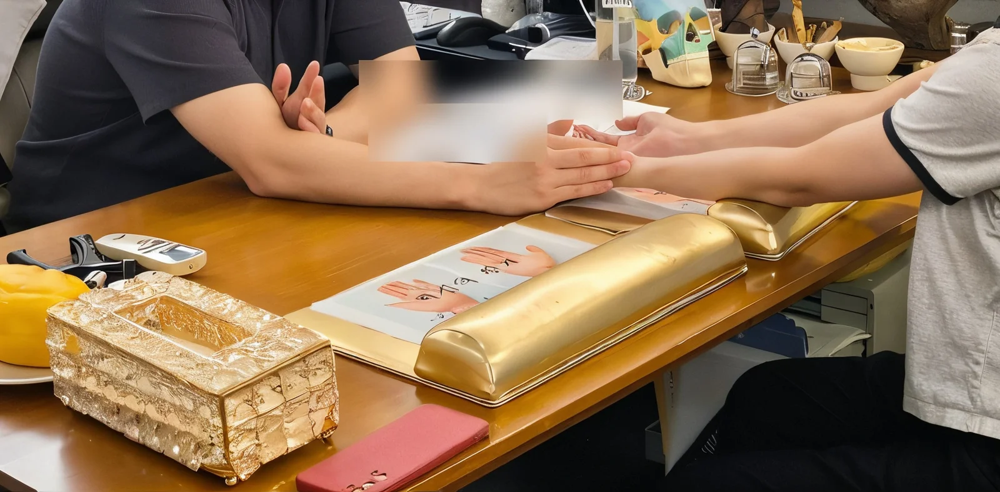

한의원은 진맥하는 곳입니다
좋은꿈참사랑한의원에서는 오시는 모든 분의 맥을 짚습니다. 처음 오신 분도, 다시 오신 분도 같습니다. 침을 맞으러 오셨든 한약을 상담하러 오셨든 마찬가지입니다.
이종호 대표원장은 오랫동안 추나로 환자의 몸을 손으로 읽어 왔습니다. 그러다 한 동료 한의사의 권유로 그 손끝 감각을 진맥에 쏟기 시작했습니다. 그 뒤로 수년째 모든 환자의 맥을 짚고 있고, 지금도 진맥 공부를 이어 가고 있습니다.
"진맥은 수십만 번 해 봐야 하는 기술입니다."
한의학의 진찰법, 사진(四診)
한의학은 오래전부터 네 가지 방법으로 환자를 살폈습니다.
| 사진 | 방법 | 보는 것 |
|---|---|---|
| 망진(望診) | 눈으로 봄 | 안색, 체형, 혀(설진) |
| 문진(聞診) | 듣고 냄새 맡음 | 목소리, 호흡 |
| 문진(問診) | 물어봄 | 증상, 잠, 식사, 생활 |
| 절진(切診) | 손으로 만짐 | 맥(맥진), 배(복진) |
진맥은 이 가운데 절진에 속합니다. 좋은꿈참사랑한의원은 맥진, 설진, 복진, 망진을 함께 보고 판단합니다.
"의사는 진단하는 사람입니다. 진단이 먼저 있고, 치료 기술은 그다음에 따라옵니다."
진맥의 역사
- 『황제내경(黃帝內經)』: 맥으로 몸의 상태를 살피는 원리를 처음 체계적으로 기록했습니다.
- 『맥경(脈經)』: 3세기 왕숙화(王叔和)가 맥의 종류를 24가지로 정리한 진맥 전문서입니다.
- 『빈호맥학(瀕湖脈學)』: 16세기 이시진(李時珍)이 27가지 맥을 노래 형식으로 정리했습니다. 이후 28맥 체계로 이어져 오늘날 한의학 교육의 기본이 되었습니다.
- 『동의보감(東醫寶鑑)』: 허준 선생도 맥법을 중요하게 다루었습니다.
2천 년 넘게 이어진 이 지혜가 오늘의 진료실 손끝에 담겨 있습니다.
어디를, 어떻게 짚나요
손목의 세 자리: 촌(寸) · 관(關) · 척(尺)
손목 안쪽, 엄지 쪽으로 맥이 뛰는 곳을 촌구(寸口)라고 합니다. 이곳에 손가락 세 개를 올립니다.
- 손목뼈가 튀어나온 자리가 관(關)입니다.
- 관보다 손바닥 쪽이 촌(寸)입니다.
- 관보다 팔꿈치 쪽이 척(尺)입니다.
전통적으로 각 자리를 몸의 장부와 연결해 봅니다.
| 촌(寸) | 관(關) | 척(尺) | |
|---|---|---|---|
| 왼손 | 심(心) | 간(肝) | 신(腎) |
| 오른손 | 폐(肺) | 비(脾) | 명문(命門) |
세 가지 깊이: 부(浮) · 중(中) · 침(沈)
자리마다 손가락 힘을 세 단계로 달리합니다. 살짝 올려 놓았을 때(부), 중간쯤 눌렀을 때(중), 깊이 눌렀을 때(침)입니다. 세 자리 × 세 깊이, 이것을 삼부구후(三部九候)라고 하며 양손 모두 봅니다.
진맥할 때 지키는 것
- 잠시 쉬신 뒤 짚습니다. 걸어오신 직후나 식사 직후에는 맥이 달라지기 때문입니다. 『내경』은 하루 중 몸이 가장 고요한 이른 아침을 진맥하기 가장 좋은 때로 보았습니다.
- 손끝이 아닌 손가락 면으로, 가볍게 짚습니다. 너무 세게 오래 누르면 맥의 모양이 변합니다.
- 양손을 비교합니다. 한 자리만 보지 않고 여섯 자리 전체의 흐름과 좌우 차이를 먼저 봅니다.
맥에서 무엇을 보나요
건강한 맥, 평맥(平脈)
한의학은 건강한 맥의 조건으로 세 가지를 꼽습니다. 부드럽고 여유가 있는지(위기·胃氣), 힘과 리듬이 고른지(신·神), 깊이 눌러도 뿌리가 살아 있는지(근·根)입니다. 빠르기는 숨 한 번 쉴 때 네다섯 번 뛰는 것을 기준으로 봅니다.
맥은 계절과 사람에 따라 다릅니다
전통적으로 봄에는 조금 팽팽하고, 여름에는 넘실거리고, 가을에는 가볍게 뜨고, 겨울에는 가라앉는 맥을 자연스럽게 봅니다. 나이, 체격, 하는 일에 따라서도 정상 범위가 다릅니다.
"사람마다 맥에 좋고 나쁨이 있는 게 아닙니다. 얼굴 생김새처럼 다 다를 뿐입니다."
맥을 읽는 네 가지 축
| 축 | 살피는 것 | 대표 맥 |
|---|---|---|
| 위치 | 얕게 뛰는가, 깊게 뛰는가 | 부맥(浮脈) · 침맥(沈脈) |
| 속도 | 느린가, 빠른가 | 지맥(遲脈) · 삭맥(數脈) |
| 힘 | 비어 있는가, 차 있는가 | 허맥(虛脈) · 실맥(實脈) |
| 모양 | 어떤 느낌으로 닿는가 | 활맥 · 현맥 · 세맥 · 삽맥 등 |
대표적인 맥의 느낌
한의학은 손끝의 느낌을 자연에 빗대어 전해 왔습니다.
| 맥 | 손끝의 느낌 | 한의학에서 살피는 방향 |
|---|---|---|
| 현맥(弦脈) | 거문고 줄처럼 팽팽함 | 긴장, 피로가 쌓인 상태 |
| 활맥(滑脈) | 쟁반 위 구슬이 구르듯 매끄러움 | 노폐물(담음)의 정체, 소화 부담 |
| 세맥(細脈) | 실처럼 가늚 | 기혈이 부족한 상태 |
| 삽맥(澀脈) | 칼로 대나무를 긁듯 껄끄러움 | 혈(血)의 흐름이 원활하지 않은 상태 |
| 긴맥(緊脈) | 꼬인 밧줄처럼 팽팽하게 튐 | 냉(冷)과 통증 |
| 완맥(緩脈) | 버들가지처럼 느슨함 | 습(濕), 소화기의 기운 |
맥은 한 가지 이름으로 딱 떨어지지 않습니다. 같은 맥이라도 힘이 있는지 없는지, 부드러운지 딱딱한지를 다시 살핍니다.
맥은 '그림자'입니다
"맥은 그림자입니다. 실체가 아니라, 지금 몸이 어떻게 버티고 있는지 비춰 주는 그림자를 느끼는 것입니다."
그래서 맥 하나로 결론을 내리지 않습니다. 혀를 보고, 배를 눌러 보고, 손발이 찬지, 잠과 소화는 어떤지 함께 여쭙니다. 같은 맥이라도 손발이 따뜻한 분과 찬 분은 치료 방향이 다릅니다.
"진료실에서는 둘이 아니라 셋이 이야기합니다. 환자분, 환자분의 맥, 그리고 저."
진맥이 치료를 바꿉니다
- 꼭 필요한 치료만 권해 드립니다. 맥을 보고 지금 치료가 필요한지, 지켜봐도 되는지를 구분해 말씀드립니다. 보약도 맥에 따라 권하지 않을 때가 있습니다.
- 한약을 그분께 맞춥니다. 같은 증상이라도 맥에 따라 처방의 방향과 세기가 달라집니다. "진맥까지 보고 맞춰 드리면, 억지로 참고 드실 일이 줄어듭니다."
- 생활 조언도 달라집니다. 기운을 아껴야 하는 맥이 있고, 쌓인 열을 풀어야 하는 맥이 있습니다. "힘이 없어서 몸이 무거운 것과 살이 쪄서 무거운 것은 다릅니다. 차로 치면 연료가 부족한 상태인지부터 봅니다."
올 때마다 맥으로 경과를 봅니다
치료 중에도 내원하실 때마다 맥을 다시 짚습니다. 몸이 어떻게 달라지고 있는지 설명해 드리고, 그에 맞게 치료와 생활 습관을 조정합니다. 여러 원장이 함께 진료하는 경우에도 일정 기간마다 대표원장이 다시 맥을 확인합니다.
"맥을 읽어 드리고, 약을 드신 뒤 반응을 보고, 다시 맥을 짚습니다. 그렇게 함께 걸어가는 치료입니다."
"치료는 찌개를 끓일 때 찌꺼기를 걷어내듯, 몸과 마음에 올라오는 괴로움을 하나하나 걷어내는 일입니다."
— 좋은꿈참사랑한의원 대표원장 이종호(한의사 면허 19769)


원장 이야기 더 보기 — 제가 환자분께 두 손목을 내어 달라고 하는 이유 →
진맥 전에 이렇게 해 주세요
- 도착하시면 대기실에서 5분쯤 앉아 숨을 고른 뒤 맥을 봅니다. 서둘러 걸어오셨거나 계단을 오르셨다면 더 그렇습니다.
- 진료 직전의 커피 같은 카페인 음료, 격한 운동, 과식은 피해 주세요. 이미 드셨거나 운동을 하셨다면 그대로 말씀해 주시면 됩니다.
- 손목시계나 팔찌, 꽉 끼는 소매는 미리 풀어 두면 편합니다.
- 복용 중인 약(혈압약·심장약·갑상선약 등)이 있으면 이름을 알려 주세요. 약에 따라 맥이 달라질 수 있습니다.
진맥으로 할 수 없는 것
진맥은 몸 상태를 살피는 중요한 단서이지만, 진맥만으로 모든 질환을 진단하지는 않습니다. 심전도, 혈액 검사, 영상 검사를 대신하지도 않습니다. 말씀과 다른 진찰, 필요할 때는 초음파나 검사 결과를 함께 모아 판단하며, 다른 의료기관의 검사나 진료가 필요하다고 판단되면 그 내용을 먼저 권해 드립니다.
맥이 매우 불규칙하면서 가슴 통증, 숨참, 어지럼, 실신이 함께 있다면 한의원보다 응급실이 먼저입니다. 복용 중인 약은 처방한 의사와 상의 없이 줄이거나 끊지 마세요.
진맥에 대해 더 읽어 보기
- 한의원에서 손목 맥을 짚는 진맥은 무엇인가요?
- 맥진은 어떻게 하고 손목에서 무엇을 살피나요?
- 통증 때문에 왔는데 진맥은 왜 하나요?
- 맥을 짚기 전에 운동이나 카페인은 어떻게 하면 되나요?
- 다시 올 때마다 맥을 또 짚는 이유는 무엇인가요?
- 맥이 빠르다, 약하다는 말은 무슨 뜻인가요?
- 진찰 방법 안내 전체 보기
자주 묻는 질문
정말 모든 환자에게 진맥을 하나요?
네. 좋은꿈참사랑한의원에서는 처음 오신 분, 다시 오신 분, 통증으로 오신 분, 교통사고 뒤 오신 분 모두 진맥을 합니다. 아픈 곳이 어디든 몸 전체의 상태를 함께 살피기 위해서입니다.
허리나 어깨가 아파서 왔는데도 맥을 보나요?
네. 같은 통증이라도 잠을 설치거나 소화가 무겁거나 몸이 많이 긴장된 상태라면 살필 점이 달라질 수 있습니다. 맥은 아픈 부위만이 아니라 그날의 몸 상태를 함께 보는 단서입니다.
진맥은 얼마나 걸리고 아프지는 않나요?
양쪽 손목에 손가락을 가볍게 대어 살피며, 길지 않습니다. 누르는 힘이 불편하면 바로 말씀해 주세요. 손목에 상처나 깁스가 있으면 미리 알려 주시면 됩니다.
진맥 전에 무엇을 피하면 좋나요?
도착하시면 5분쯤 앉아 숨을 고르신 뒤 맥을 보는 것이 좋습니다. 진료 직전의 커피 같은 카페인 음료, 격한 운동, 과식은 맥을 평소와 다르게 만들 수 있으니 피하시고, 그랬다면 그대로 말씀해 주세요.
맥만 짚어 보면 병을 알 수 있나요?
아니요. 진맥만으로 모든 질환을 진단하지는 않습니다. 말씀해 주신 이야기, 혀와 배의 상태, 필요할 때는 초음파나 검사 결과를 함께 모아 판단하며, 다른 의료기관의 검사가 필요하다고 판단되면 먼저 안내해 드립니다.
다시 올 때마다 맥을 또 보는 이유가 있나요?
지난 진료 때의 맥과 오늘의 맥을 비교하기 위해서입니다. 그사이 잠, 소화, 통증이 어떻게 달라졌는지 여쭙는 말씀과 함께 보고 오늘 치료를 다시 정합니다.
스마트워치로 재는 맥박과 진맥은 같은 건가요?
다릅니다. 스마트워치나 혈압계는 1분에 몇 번 뛰는지를 숫자로 알려 줍니다. 진맥은 빠르기와 함께 맥이 느껴지는 깊이, 힘, 모양, 양손의 차이를 손끝으로 살핍니다. 맥박 수가 계속 지나치게 빠르거나 느리면 내과 등 진료를 권합니다.
심장 질환이 있거나 혈압약을 먹고 있어도 진맥을 받아도 되나요?
네, 받으실 수 있습니다. 다만 복용 중인 약이 맥에 영향을 줄 수 있어 약 이름을 알려 주시면 함께 고려합니다. 복용 중인 약은 처방한 의사와 상의 없이 줄이거나 끊지 마세요.
감수: 좋은꿈참사랑한의원 대표원장 이종호(한의사 면허 19769) · 마지막 확인 2026-11-26 · 일반적인 건강 정보이며 진단·치료를 대신하지 않습니다. 문의 02-815-7510